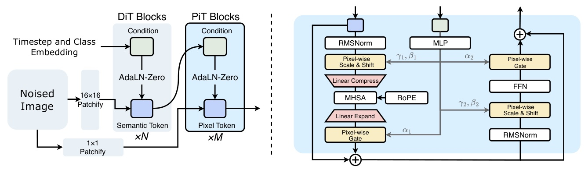
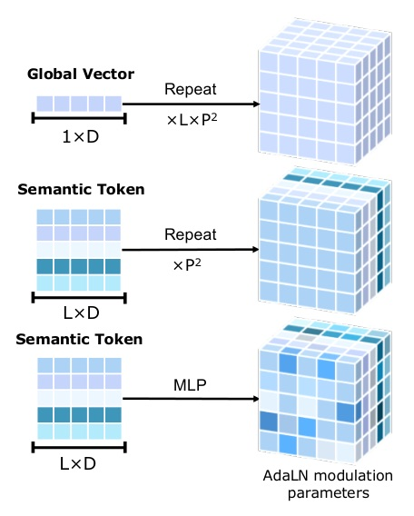
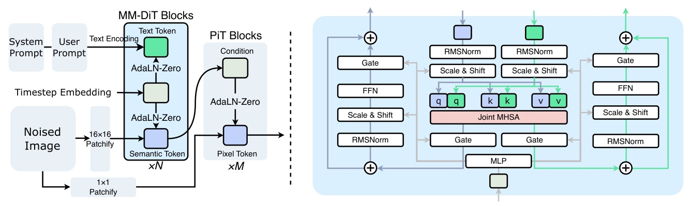
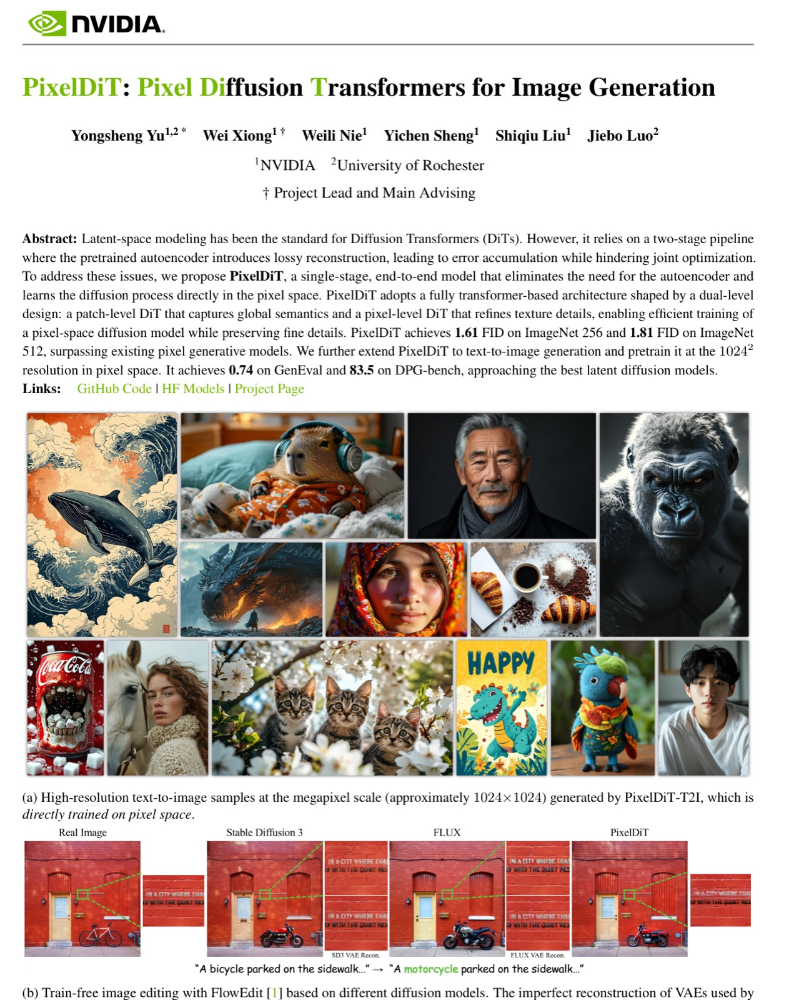
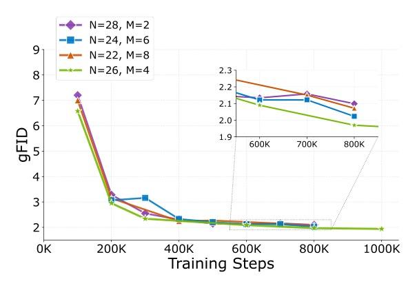

A single-stage DiT trained directly in pixel space: no VAE, no latent bottleneck, but still efficient through a dual-level transformer.

PixelDiT makes pixel-space diffusion practical by compressing only the attention path, not the image representation.
scond = sN + t.
Pixel Token Compaction is the trick: compress-attend-expand, then return to pixels.

| setting | method | gFID | sFID | IS | recall |
|---|---|---|---|---|---|
| ImageNet 256 | PixelFlow-XL | 1.98 | 5.83 | 282.1 | 0.60 |
| ImageNet 256 | PixNerd-XL | 1.93 | - | 298.0 | 0.60 |
| ImageNet 256 | PixelDiT-XL | 1.61 | 4.68 | 292.7 | 0.64 |
| ImageNet 512 | PixelDiT | 1.81 | 5.61 | 278.6 | 0.67 |
| resolution | method | params | GenEval | DPG | throughput |
|---|---|---|---|---|---|
| 512 | PixNerd | 1.2B | 0.73 | 80.9 | 1.04 |
| 512 | PixelDiT-T2I | 1.3B | 0.78 | 83.7 | 1.07 |
| 1024 | FLUX-dev | 12.0B | 0.67 | 84.0 | 0.04 |
| 1024 | FLUX-schnell | 12.0B | 0.71 | 84.8 | 0.5 |
| 1024 | PixelDiT-T2I | 1.3B | 0.74 | 83.5 | 0.33 |

| model | background MSE | SSIM |
|---|---|---|
| FLUX | 0.009105 | 0.8254 |
| SD3 | 0.004349 | 0.8400 |
| PixelDiT | 0.001522 | 0.8628 |
| variant | 80-epoch gFID | interpretation |
|---|---|---|
| Vanilla DiT/16 | 9.84 | Patch-only pixel diffusion is weak |
| + RoPE, RMSNorm | 8.53 | Better transformer recipe, still weak |
| Dual-level + patch-wise AdaLN, no compaction | OOM | Dense pixel attention is infeasible |
| + Pixel Token Compaction | 3.50 | Feasible and much better |
| + Pixel-wise AdaLN | 2.36 | Dense semantic conditioning closes the loop |
Without compaction: 82,247 GFLOPs + OOM. With PixelDiT: 311 GFLOPs + 1.61 FID.

| model / setting | GFLOPs | FID | note |
|---|---|---|---|
| RAE, DiTDH-XL/2 | 292 | 1.13 | Best latent entry in table |
| LightningDiT-XL/2 | 238 | 1.35 | Latent baseline |
| JiT-G/16 | 766 | 1.82 | Pixel baseline |
| PixelDiT-XL | 311 | 1.61 | Strong pixel-space cost-quality point |
To address these challenges, we propose PixelDiT, a single-stage, fully transformer-based diffusion model that performs end-to-end training and sampling in pixel space while explicitly structuring pixel modeling.
PixelDiT 的核心不是單純把 latent diffusion 搬回 pixel space，而是把 pixel modeling 的結構先拆開，讓端到端訓練可行。§1 p.2
This reduces the attention sequence length from H×W to L=(H/p)(W/p), a p²-fold reduction; with p=16, this yields a 256× shrinkage.
關鍵效率槓桿是 sequence length shrink，而不是少做 pixel update；注意 attention cost 又會近似帶來 p⁴ 級收益。§3.2 p.5; §4.5.2 p.9
Without pixel modeling, i.e., the visual content is only learned at the patch level, it will be challenging for the model to learn the fine details, and the visual quality will degrade significantly.
ablation 把主張釘死：只有 patch-level semantics 不夠，pixel-level pathway 才是保細節的必要條件。§4.5.1 p.9
Video generation / temporal models